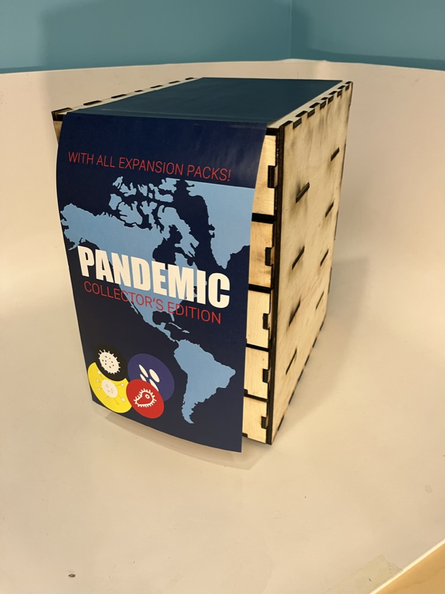
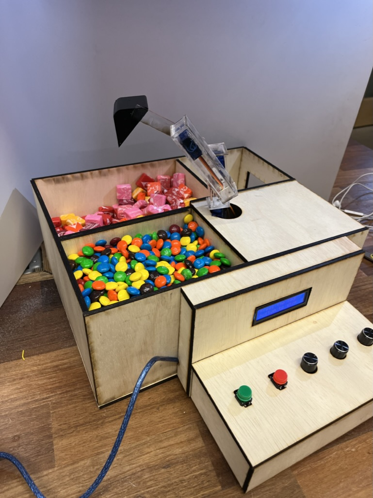

Below is a portfolio of featured projects from my ATLAS classes. They showcase the breadth of concepts and skills learned through my undergraduate classes.
Project Master is a website geared towards engineering students in project management positions. The website will help them organize their management documents as well as educate and guide them throughout the project management process.
This project was created as my Creative Technology and Design Capstone Project to showcase concepts and skills learned throughout my ATLAS career.
For this project I had to design an accordion style book in Adobde Illustrator that uses only text to express song lyrics. My book is based on the song "Thing of Beauty" by Danger Twins. This song is upbeat, loud and focuses on the beauty of life even in all the chaos.
As a disclaimer, I lost all my documentation and files for this project besides this PDF when my laptop died in January 2023. I was unable to recover the hard drive so photos and Illustrator files were lost.
Skills used in this project include:
The first step in the project was to pick a portion of the song that I wanted to express. For this I picked the beginning of the song as it was the part of the song that speaks to me the most.
Next I broke the verse into sections based on words that went together. The words needed to be broken out into logical groups so that every square would make sense. For this part I played around with sketching different ideas for representing words pairing in a box. After creating several different versions of word pairings I chose based off of my strongest expressive ideas.
After sketching my ideas I picked a color palette for the project. The constraint of the project was that we were only able to pick one color and use shades of that color. I chose to pick a vibrant hot pink as it expressed the vibrance and boldness of the song. The song has a strong bass and a quick tempo which to me reminds me of bold, bright colors. The color also had to show up well when printed on paper so I did some test prints to see how the color showed up when printed.
With all of the setup done I went in and implemented my sketching into Illustrator and created the project. This part of the project took the longest as I was learning how to create all of the different formats in Illustrator. Before this project I was not as good with creating curved lines in Illustrator however after practicing on this I am much more confident.
After the digital design was done I created the accordion booklet. Each page was printed on an 11 x 17 inch sheet of paper. Next, each row was cut out using the horizontal guide marks on the page. At the end of each row a small tab was left to glue the next row to continue the booklet. Then the verticle lines were scratched to allow the book to fold in a straight line. To make the accordion affect each page was folded one at a time alternating between folding forward and backward. In the end result the book was able to be stretched so that all squares were in one line.
This project explored using Adobe Photoshop and Lightroom to create a photo book framing a poem or stanze from a perspective. Based on the song "Amazing Life" by Britt Nicole I show my perspective on the world. All photos in this book were taken from different vacations from around the country and world.
Skills used in this project include:
I have always been interested in nature photography and this project allowed me to explore different photos I've taken over the past several years. To create this project I started with my favorite song that reminds me about how amazing the world around us is. For me this is "Amazing Life" by Britt Nicole. I chose my favorite lyrics from the song and broke them up into lines. With each line I wrote down which type of scene the words invoked for me.
Next I went through all of my vacation albums and pulled out some of my favorite images from each. I tried to get a really wide variety of scenary. I wanted my book to also reflect the diversity of nature and the diversity of beauty. As I went through photos I kept track of different lyrics that I thought each image would be good for.
As I matched images to lyrics I also tried to pair images together that either showed the diversity of beauty or were similar images from different perspectives. For images that were completely different I wanted both images to evoke the same feeling for the viewer. Almost like the idea of two sides of the same coin. Sometimes I had two very strong images of the same thing that complimented each other by how similar they were.
When it came to choosing the front and back cover of the book I wanted to pick almost two different types of photos. The cover I chose is mysterious and almost leaves the viewer guessing. It makes people wonder where it is, where the path is going, and how big the walls of the cave are. The back cover of the book showcases the adventure that life has. This is an image of myself backpacking looking off of a cliff into a valley. I wanted the viewer to feel the sense of adventure and beauty of a human places in nature. By having my back away from the camera it also signaled a sort of finality in the way a book comes to an end.
This project explores using 3D CAD modeling in creating game board storage. This handmade game board drawer system is made from sanded plywood. It combines digital rendering and planning with hands-on building experience.
For this project I created a game board storage drawer system for my favorite board game, Pandemic. Pandemic has four different expansion packs and I wanted something to keep all of the pieces of the game together. Below is the official write up of this project with a process log at the end.
Skills used in this project include:
This Adruino based mechanical arm candy machine uses potentiometers, buttons and motors for a fun interactive game. Users are able to move the mechanical arm at three different joints in order to get their desired candy out of the machine. The housing is created from lasercut plywood and acrylic.
This project was designed and manufactured by Sophia Montie and myself. Documentation and instructions can be found at this Instructables page: Candy Claw Machine
Skills used in this project include: